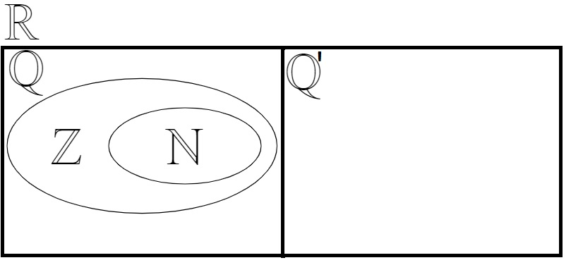

Les grands ensembles

 : les nombres naturels . Ce sont les nombres positifs en plus du 0.
: les nombres naturels . Ce sont les nombres positifs en plus du 0. 
 : les entiers relatifs. Ce sont les nombres sans partie fractionnaire.
: les entiers relatifs. Ce sont les nombres sans partie fractionnaire. 
 : les nombres rationnels. Ce sont les nombres à représentation décimale finie ou infine périodique.
: les nombres rationnels. Ce sont les nombres à représentation décimale finie ou infine périodique. 
 : les nombre irrationnels. Ce sont tous les nombre réels qui ne sont pas rationnels.
: les nombre irrationnels. Ce sont tous les nombre réels qui ne sont pas rationnels. 
 : les nombres réels. Ce sont l'ensemble des nombres rationnels et irrationnels. Dans ce cours, il n'y aura pas d'autres nombres. Lorsque l'on ne trouve pas de solution dans les réels, on dira qu'il n'y a pas de solution.
: les nombres réels. Ce sont l'ensemble des nombres rationnels et irrationnels. Dans ce cours, il n'y aura pas d'autres nombres. Lorsque l'on ne trouve pas de solution dans les réels, on dira qu'il n'y a pas de solution. : les nombres complexes. Ces nombres peuvent présenter une partie imaginaire (racine d'un nombre négatif).
: les nombres complexes. Ces nombres peuvent présenter une partie imaginaire (racine d'un nombre négatif). 
Arithmétique de base
Priorités des opérations
Les expressions arithmétiques (et algébriques) respectent une priorité des opérations. On évalue une expression en effectuant en bon ordre :
- les parenthèses
 \text{ ou } \left[\; \right])
- les exposants
- les multiplication
) et les divisions
et les divisions )
- les additions
) et les soustractions
et les soustractions )
Exemple:
Propriétés des réels
Trois propriétés relativement simples sont le fondement de toute l'algèbre avancée que nous verrons dans ce cours. Il s'agit de la commutativité de l'addition et de la multiplication, l'associativité de l'addition et de la multiplication et finalement la distributivité à gauche et à droite de la multiplication sur l'addition.

 | commutativité de l'addition |
 | commutativité de la multiplication |
+c=a+(b+c)=a+b+c) | associativité de l'addition |
\times c=a\times (b\times c)=a\times b\times c) | associativité de la multiplication |
=ab+ac) | distributivité à gauche |
\times c=ac+bc) | distributivité à droite |
Propriétés des exposants